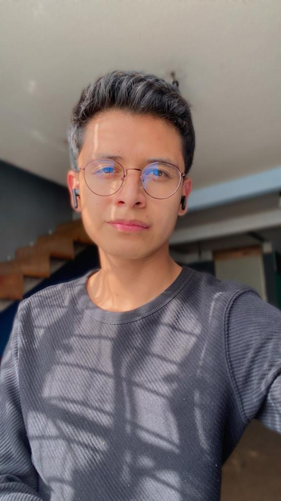

Curriculum Vitae

Descripcion personal
Soy Sergio Dimas, tengo 20 años y actualmente vivo en la
ciudad de México. Soy una persona muy curiosa que esta buscando
nuevos retos todo el tiempo, mi responsabilidad y curiosidad me
lleva a caminos muy interesantes donde puedo divertirme,
desestrezarme y aprender sobre multiples tareas ayudandome a
crecer profesional y personalmente.
Me apasiona la cocina; preparar platillos es asombroso pero
compartirlos con las personas que mas quiero es magico.
Educacion
Termine el bachillerato general en el 2020 y comence una
licenciatura de ingenieria industrial en la Universidad Autonoma Metropolitana, aunque no la conclui en
un futuro a mediano plazo retomare esta carrera especializada
en sistemas computacionales.
Experiencia laboral
Trabajo el sector de telecobranza para la empresa Atento, brindo
informacion sobre sus tarjetas de credito haciendo una labor de
cobranza como un de educacion para que no existan reincidentes en
las faltas de pago.
He sido destacado con 3 reconocimientos por mi alta productividad
en ventas asi como un buen trabajo siguiendo las normas que la
empresa establece, ademas tuve la oportunidad de compartir un blog
sobre la comunidad LGBT en la plataforma de la empresa.
Skills
- Atencion al cliente
- Uso basico de paqueteria office
- Logico matematico
- Manejo de informacion sobre tarjetas de credito
- Buen manejo de expresion oral
- Tolerante a la frutracion
Hobbies
- Ver documentales sobre asesinos seriales, biologia
genetica y/o hechos historicos.
- Leer libros-cuentos de amor
- Cocinar
- Escuchar musica pop y electropop
- Caminar y hacer ejercicio
- Redactar blogs
Explicacion de curso
Me interesa cursar el curso de Hnery porque ademas de que tengo ganas
de aprender sobre Full Stack tambien quiero mejorar mi economia, considero
que tengo varias habilidades y ganas para tener un camino exitoso sin mencionar
que he tenido la oportunidad de estar con personas que se dedicas a esto y
por ende me dan ganas de saber mas.